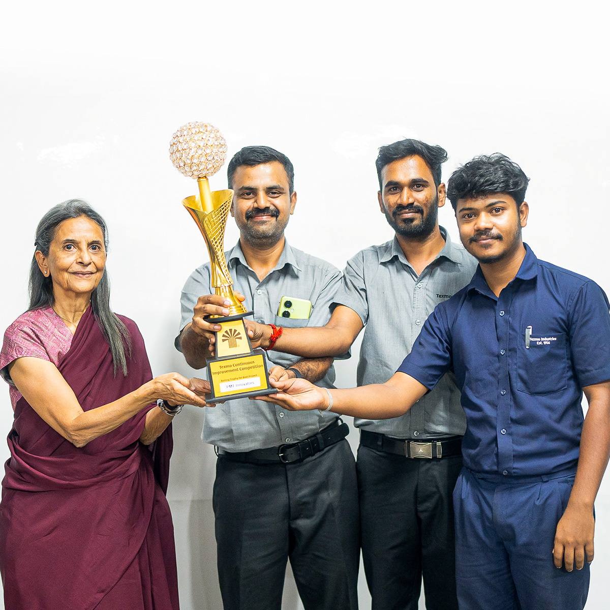

Industrial Automation · AI Computer Vision · IIoT · Product Development
Explore My
Experience

Experience
6+ years Mechatronics Engineer — Electrical & Mechanical Maintenance, Industrial Automation, AI Computer Vision, IIoT and Product Development Texmo Industries
Education
Swiss Vocational Diploma in Mechatronics 2017-2020 Texmo Academy
Mechatronics Engineer with 6+ years of industrial experience across electrical & mechanical maintenance, industrial automation, AI computer vision, IIoT, and product development.
Personally designed and deployed 25+ industrial automation and digitalization systems — from an AI-powered fabric defect detection system built on custom-trained YOLO models, to plant-wide IIoT dashboards (EMS, OEE, CBM, TBM), a computer-vision safety monitoring system, and a full Breakdown Assist barcode spare-retrieval platform.
Delivers complete engineering solutions end-to-end — mechanical design, PLC/HMI programming, embedded systems, and web applications — from concept to shop-floor deployment.
Awarded First Prize in the Continuous Improvement Competition for an A3 Problem Solving project, and contributed to 20+ Kaizen initiatives.
TPMKaizenSQDIPPreventive MaintenanceRoot Cause Analysis (RCA)A3 Problem Solving
I Proud to Display My
Projects
25+ Industrial Automation, IIoT and AI projects deployed on the shop floor. Here are some examples.
VIS-01
Fabric defect detection (YOLO)
A custom-trained YOLO model streaming from 4 industrial cameras to catch fabric defects on the line in real time, before they move to the next process.
4 industrial cameras integrated with live video streaming
Custom-trained YOLO model for automated defect detection, replacing manual visual inspection
Digital logging of every detected defect for quality review
VIS-02
Industrial safety monitoring — line crossing detection
A computer-vision safety system that watches restricted zones near moving machinery and raises real-time alerts the moment someone crosses a line they shouldn't.
Line-crossing detection zones configured per machine
Real-time alerts triggered the moment a boundary is breached
Supports plant safety audits with a persistent event record
WEB-03
Digital engineering management system
Gives maintenance technicians instant access to machine drawings and spare part identification straight from the shop floor, cutting time spent hunting for documentation.
Real-time data acquisition directly from energy meters
Plant-wide consumption view, not just per-machine
Surfaces optimization opportunities from usage patterns
AUTO-10
Breakdown Assist — barcode spare retrieval system
A platform built to solve a real shop-floor problem: nobody could find a spare part fast enough during a breakdown. This connects breakdown diagnosis directly to spare location, stock, and reordering.
Central ESP32-based controller for multiple appliances
Web/app control layer for remote operation
HOME-16
Automatic fish food feeder
A personal IoT build for my own aquarium at home — designed fully from scratch, from mechanism to enclosure, on an ESP32 with a custom 3D-printed housing.
Third robot form built from the same modular joint system, aimed at reusing one hardware module across many applications instead of designing each robot from zero
HOME-21
Animatronics — Pixar-lamp-style robot
A self-designed animatronic build inspired by the classic Pixar lamp, with a custom motion mechanism built from scratch.